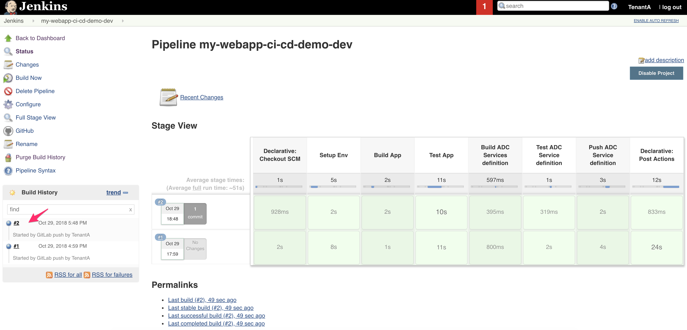
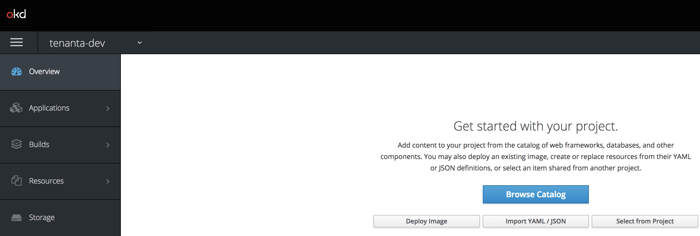
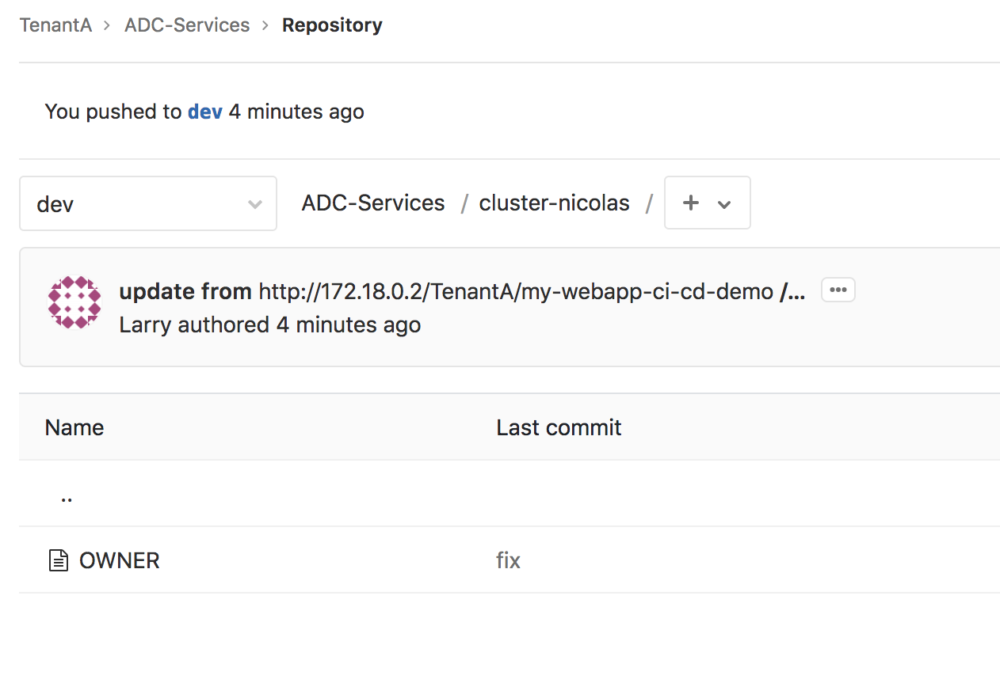

Remove the application¶
We expect that you still have the different tabs opened during the previous lab:
- 2 GitLab tabs: one for the my-webapp-ci-cd-demo repo and the other one for the ADC-Services repo. don’t forget to go to the DEV branch.
- 2 Jenkins tabs: one for the my-webapp-ci-cd-demo-dev project and the other one for the adc-services-dev project. don’t forget to go to the DEV branch.
- 1 tab on your BIG-IP to show its configuration
- 1 tab on your minishift deployment (login: dev, password: dev). Go in the tenanta-dev project
Trigger the removal¶
To trigger the removal of the application, it is fairly straightforward: we simply need to add a DELETE file back into the my-webapp-ci-cd-demo repo.
- Go to the tab opened showing your repo my-webapp-ci-cd-demo repo. Make sure to be in the dev branch
- Click on the + sign and select new file
{kind=link}
- Call the file DELETE. If you want to put a custom commit message, feel free to do so.
- Click on Commit changes
{kind=link}
{kind=link}
As soon as you’ve done this. The WebHook will be triggered and you’ll see a new build happening on the CI Server Jenkins. Go to the tab open on Jenkins and showing the projet my-webapp-ci-cd-demo-dev
{kind=link}
Here we can see that a new build has been processed and its all green. It means that:
The application should have been removed from Minishift:
Our GitLab repo ADC-Services should have the directory called cluster-nicolas empty except for an OWNER file. Validate this by going to your opened tab on GitLab and showing the **ADC-Services* repo:
Since we updated the GitLab ADC-Services repo, the other pipeline should have been triggered. Go to your tab opened on Jenkins and on the job called adc-services-dev. A new build should have been triggered:
The pipeline has been successfull so we can validate that the configuration was also removed from our BIG-IP. Since the partition is empty, AS3 will have removed it also. There is no more tenanta-dev partition.
{kind=link}
{kind=link}
{kind=link}
{kind=link}